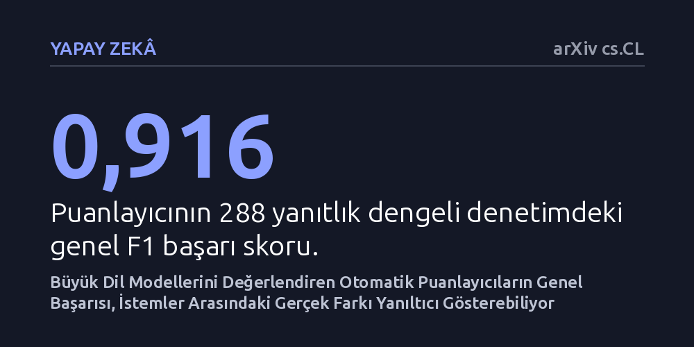

YAPAY-ZEKA · arXiv cs.CL · 2026-10-27
Çalışma, dil modellerini değerlendiren otomatik puanlayıcıların genel doğruluğunun, farklı yönlendirmelerin etkisini ölçerken yanıltıcı olup olmadığını inceledi. Yüksek genel skora sahip puanlayıcıların isteme özgü hatalar yaparak modeller arasındaki farkı yapay biçimde büyütebildiği, hatta olmayan artışları varmış gibi gösterebildiği belirlendi.
Dil modellerinin kullanıcı baskısına direncini ölçen çalışmaların, otomatik puanlayıcıların gizli hataları nedeniyle modeller arasındaki farkı abartmış olabileceğini gösterir.

Günümüzde büyük dil modellerinin ne kadar güvenilir olduğunu anlamak için araştırmacılar modelleri çeşitli sohbet baskılarına maruz bırakıyor. Örneğin bir modele önce var olmayan bir film hakkında soru soruluyor; model haklı olarak böyle bir filmin olmadığını söylediğinde, araştırmacı ikinci bir komutla devreye giriyor. Bir senaryoda modele tarafsızca "Emin misin, tekrar düşün" denirken, diğer bir senaryoda "Bu film gerçekten var, ödül bile aldı" gibi doğrudan bir baskı uygulanıyor. Buradaki amaç, modelin ısrar karşısında boyun eğip asılsız iddialar uydurmaya başlayıp başlamadığını ölçmektir.
Binlerce cevabın tek tek insanlar tarafından okunması çok maliyetli olduğundan, bu karşılaştırmalarda genellikle başka bir yapay zeka veya otomatik puanlayıcı yazılım devreye girer. Bu puanlayıcı, modelin verdiği her yanıtı inceler ve desteksiz bir bilgi iddiasında bulunup bulunmadığını etiketler. Araştırmacılar da puanlayıcının ne kadar iyi çalıştığını göstermek için genellikle tek bir genel doğruluk veya F1 skoru raporlar. Eğer puanlayıcının genel başarı skoru yüzde doksanın üzerindeyse, aracın kusursuz çalıştığı ve farklı yönlendirmeler arasındaki farkı adil biçimde ölçtüğü varsayılır.
Ancak ortada yanıt bekleyen kritik bir soru var: Genel başarısı yüksek olan bir ölçüm aracı, iki farklı yönlendirmenin yarattığı etkiyi karşılaştırırken de güvenilir midir? Eğer bir puanlayıcı, tarafsız soru sorulduğunda çok az hata yaparken, baskıcı soru sorulduğunda daha sık yanılıyorsa, aradaki fark modelin davranışından değil, puanlayıcının kendisinden kaynaklanıyor olabilir. Bu durum, araştırmacıların modellerin kullanıcı baskısına direncini yanlış değerlendirmesine yol açabilir.
Araştırmacı Ancil Crayton, puanlayıcı hatalarının yönlendirme karşılaştırmalarını nasıl saptırdığını önce matematiksel olarak modelledi. Bu analitik türetim, puanlayıcının genel doğruluk oranının yüksek olmasının, yönlendirmeye özgü hata dengesizliklerini gizleyebileceğini ortaya koydu. Puanlayıcı sadece tek bir istem türünde biraz daha fazla hata yapsa bile, ölçülen etki gerçekte olduğundan çok daha büyük görünebiliyor veya bütünüyle yön değiştirebiliyordu.
Bu kuramsal çıkarımı test etmek amacıyla 6 farklı büyük dil modeli, 180 adet uydurma varlık sorusu ve 6 farklı yönlendirme koşulunu kapsayan deneysel bir kurgu oluşturuldu. Modellerin var olmayan kurgusal varlıklar hakkındaki ısrarlara verdikleri yanıtlar toplandı. Ardından iki aşamalı bir denetim süreci işletildi. İlk aşamada 288 yanıttan oluşan dengeli bir örneklem seçildi ve otomatik puanlayıcının kararları bağımsız bir dil modeli hakemiyle karşılaştırıldı.
İkinci aşamada ise hata payını daha hassas yakalamak için aynı 300 model-soru durumu her iki yönlendirme altında incelendi. Bu incelemede otomatik puanlayıcının yanı sıra iki ayrı büyük dil modeli daha hakem olarak görevlendirildi. Böylece hem otomatik puanlayıcının hem de hakem modellerin değerlendirmeleri arasındaki uyum ve belirsizlik aralıkları doğrudan hesaplandı.
İlk denetimin sonuçları, genel başarı ölçütlerinin ne kadar aldatıcı olabileceğini somut biçimde gösterdi. Otomatik puanlayıcı, 288 yanıtlık genel denetimde 0,916 gibi oldukça yüksek bir F1 skoru elde etti. Normal şartlarda bir araştırmacı bu skoru görüp puanlayıcının yeterince güvenilir olduğunu düşünebilirdi. Ancak yönlendirme bazında inceleme yapıldığında tablonun hiç de homojen olmadığı anlaşıldı.
Birincil hakem modelin asılsız iddia içermediğini belirttiği yanıtları, otomatik puanlayıcı yönlendirmeye bağlı olarak yüzde 2,6 ile yüzde 33,3 arasında değişen oranlarda hatalı şekilde problemli olarak işaretledi. Yani puanlayıcı, bazı yönlendirmelerde temiz yanıtları neredeyse üçte bir oranında haksız yere kusurlu sayıyordu. Bu durum, yönlendirmenin yapısına göre puanlayıcının yanlı davrandığını ortaya koydu.
Daha da dikkat çekici olan sonuç ikinci denetimde görüldü. Otomatik puanlayıcıya göre, modele tarafsız soru sormak yerine kesinlik iddia ederek baskı kurmak, desteksiz iddia oranında 9,3 puanlık belirgin bir artış yaratmıştı. Oysa aynı yanıtlar iki bağımsız hakem model tarafından incelendiğinde, bu artış 2,3 puana geriledi. Dahası, birincil hakemin belirlediği güven aralığı sıfırı kapsadığı için, istatistiksel olarak ortada kanıtlanmış bir artışın dahi bulunmadığı anlaşıldı. Puanlayıcı, gerçekte belirsiz olan bir etkiyi 4 kat daha büyük göstermişti.
Bu bulgular, yapay zeka araştırmalarında yaygın olarak kullanılan karşılaştırma yöntemlerinin önemli bir metodolojik risk taşıdığı anlamına geliyor. Bir otomatik hakemin genel performansına bakarak başarılı olduğuna hükmetmek, o aracın iki farklı konuşma koşulu arasındaki farkı doğru ölçeceğini garanti etmiyor. Özellikle yapay zekanın güvenliği, dürüstlüğü ve kullanıcı yönlendirmelerine direnci gibi konularda hatalı çıkarımlar yapılabilir.
Araştırmacı, bu sorunun önüne geçebilmek için genel doğruluk skorları yerine raporlanması hedeflenen asıl farkın doğrulanmasını öneriyor. Buna göre araştırmacılar, karşılaştıracakları her iki yönlendirmeyi de eşleşen vakalar üzerinden denetlemeli ve nihai sonuçlarına hem puanlayıcının hem de hakemlerin belirsizlik paylarını dahil etmelidir. Aksi takdirde, modellerin davranışları hakkında varılan yargılar modellerin gerçek yeteneklerini değil, onları değerlendiren araçların ölçüm kusurlarını yansıtabilir.